書き
漢字を書く
読みと文から抜けた字をまな板に手書き 下ごしらえ→煮る→盛るで料理が仕上がる 見本と並べて自分で答え合わせ
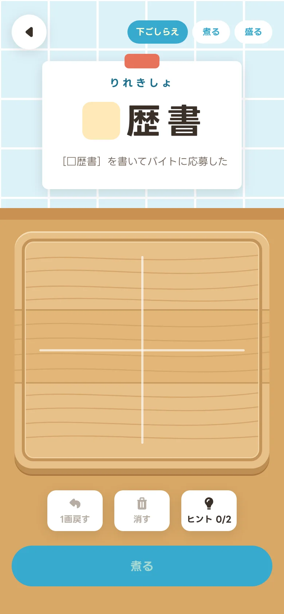
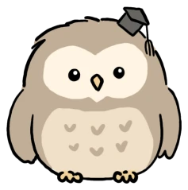
どう書くんだっけ？と思ったらすぐ調べられる 短いことば遊びでごはんを手に入れて 食いしん坊のパートナーに食べさせよう
レポートの締め切りもバイトの履歴書も 読めるのに書けない字はふいにやってくる 漢食なら文字・カメラ・声ですぐ調べられて 読みと意味と使いかたがひと目でわかる
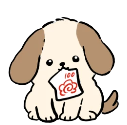
ためしに押してみて
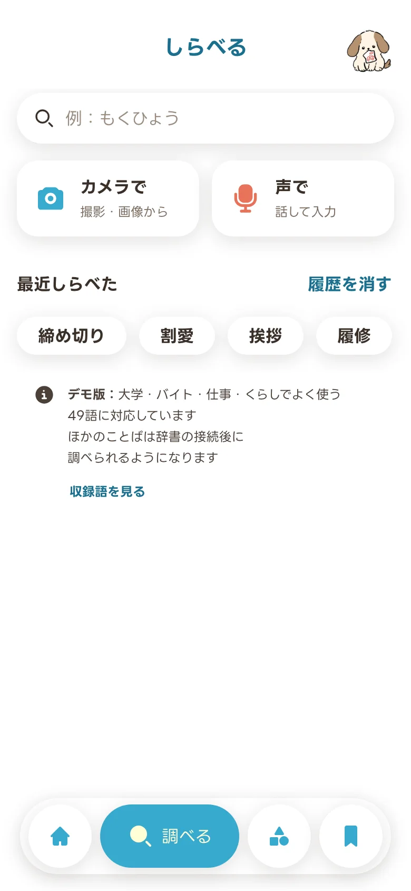
わからない字は文字・カメラ・声で パートナーがいっしょに探してくれる
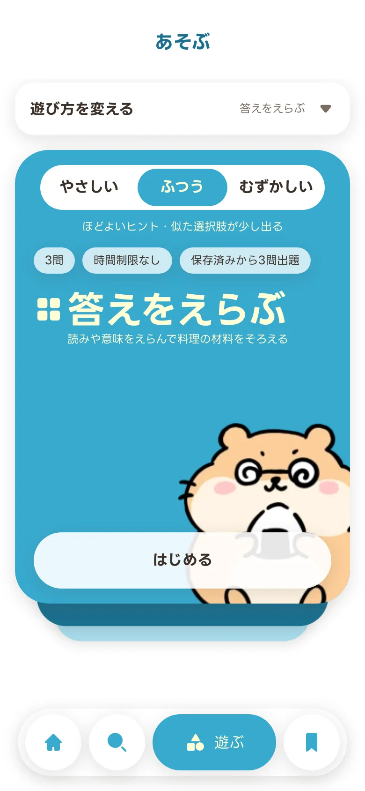
調べたことばで短いことば遊び 1回3問で時間制限なし
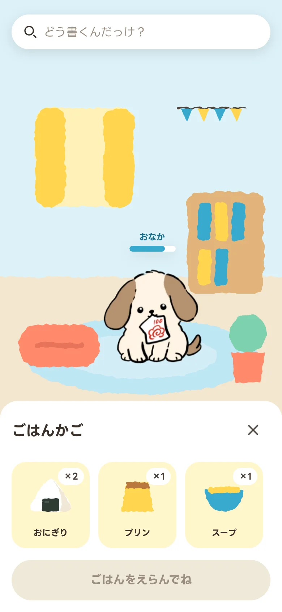
遊ぶとごはんが1つ必ずもらえる パートナーにあげるとおいしそうに食べる
キッチンを舞台に料理をしながら遊ぶ
まちがえても正しい答えを見て
そのまま続けられる
読みと文から抜けた字をまな板に手書き 下ごしらえ→煮る→盛るで料理が仕上がる 見本と並べて自分で答え合わせ


読みや意味を4つの中からえらぶ 答えるたびに料理の材料がそろっていく 苦手なことばは少しあとでまた出てくる
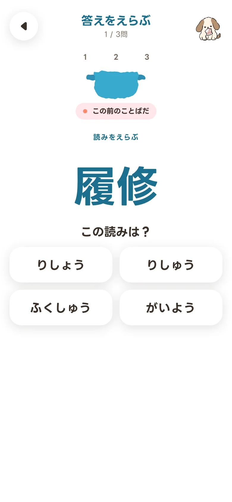
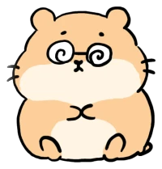
むずかしいほどおまけのごはんが出やすい カードを押すと次の難しさが前に出てくる
食べかたもごはんごとにちがう 押してみると少し跳ねるよ
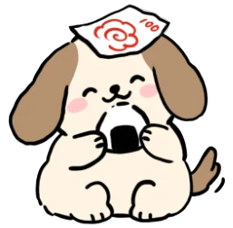
家具はときどきごほうびでもらえる
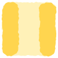
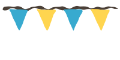
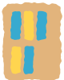
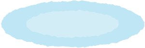
気になった字はタグをつけて保存 あとで見返したり遊びに出したりできる
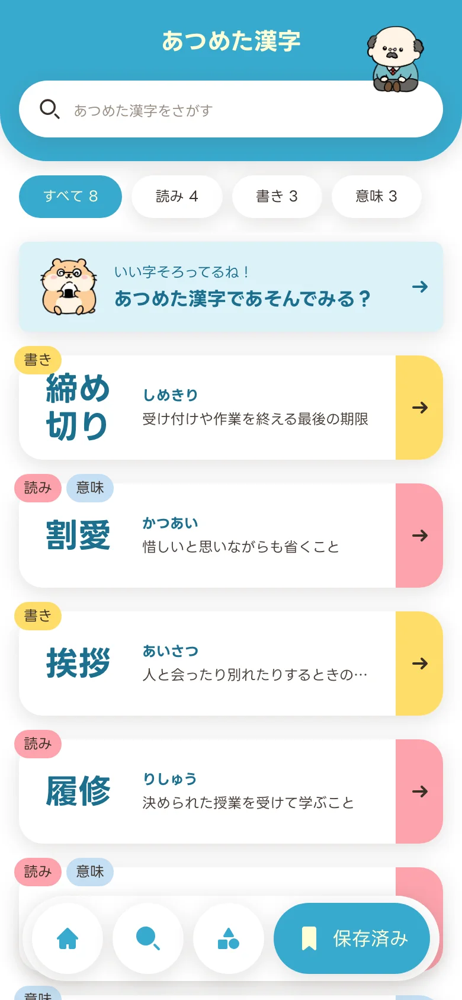
勉強させない
漢字アプリ
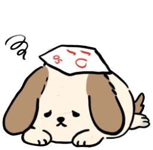
無料で遊べます
いりません 記録はこの端末のブラウザに保存されます
いまはお試し版です 大学・バイト・仕事・くらしでよく使う49語に対応しています
ブラウザで開くだけで使えます スマホで使いやすいように作っています
いなくなりません おなかがすくとクッションでへにゃっとしますがごはんをあげると元気になります